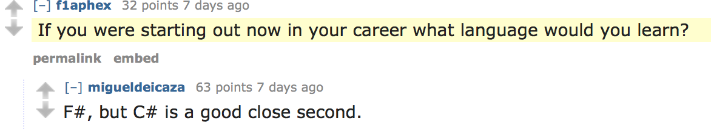
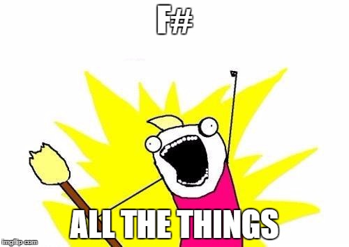

val sum : int
Full name: fsharpadvancedtopics.sum
Full name: fsharpadvancedtopics.sum
module Array
from Microsoft.FSharp.Collections
from Microsoft.FSharp.Collections
val filter : predicate:('T -> bool) -> array:'T [] -> 'T []
Full name: Microsoft.FSharp.Collections.Array.filter
Full name: Microsoft.FSharp.Collections.Array.filter
val s : int
val sum : array:'T [] -> 'T (requires member ( + ) and member get_Zero)
Full name: Microsoft.FSharp.Collections.Array.sum
Full name: Microsoft.FSharp.Collections.Array.sum
val x : 'a
val f : ('a -> 'b)
val evens : (int [] -> int [])
Full name: fsharpadvancedtopics.evens
Full name: fsharpadvancedtopics.evens
val sumEvens : (int [] -> int)
Full name: fsharpadvancedtopics.sumEvens
Full name: fsharpadvancedtopics.sumEvens
val sum' : int
Full name: fsharpadvancedtopics.sum'
Full name: fsharpadvancedtopics.sum'
val f : (obj -> obj)
Full name: fsharpadvancedtopics.f
Full name: fsharpadvancedtopics.f
val g : (obj -> obj)
Full name: fsharpadvancedtopics.g
Full name: fsharpadvancedtopics.g
val intToCharArray : (obj -> obj)
Full name: fsharpadvancedtopics.intToCharArray
Full name: fsharpadvancedtopics.intToCharArray
val g : ('b -> 'c)
type Shape =
| Circle of Radius: float
| Triangle of Base: float * Height: float
| Rectangle of Length: float * Height: float
member getArea : unit -> float
Full name: fsharpadvancedtopics.Shape
| Circle of Radius: float
| Triangle of Base: float * Height: float
| Rectangle of Length: float * Height: float
member getArea : unit -> float
Full name: fsharpadvancedtopics.Shape
union case Shape.Circle: Radius: float -> Shape
Multiple items
val float : value:'T -> float (requires member op_Explicit)
Full name: Microsoft.FSharp.Core.Operators.float
--------------------
type float = System.Double
Full name: Microsoft.FSharp.Core.float
--------------------
type float<'Measure> = float
Full name: Microsoft.FSharp.Core.float<_>
val float : value:'T -> float (requires member op_Explicit)
Full name: Microsoft.FSharp.Core.Operators.float
--------------------
type float = System.Double
Full name: Microsoft.FSharp.Core.float
--------------------
type float<'Measure> = float
Full name: Microsoft.FSharp.Core.float<_>
union case Shape.Triangle: Base: float * Height: float -> Shape
union case Shape.Rectangle: Length: float * Height: float -> Shape
val x : Shape
member Shape.getArea : unit -> float
Full name: fsharpadvancedtopics.Shape.getArea
Full name: fsharpadvancedtopics.Shape.getArea
val r : float
namespace System
type Math =
static val PI : float
static val E : float
static member Abs : value:sbyte -> sbyte + 6 overloads
static member Acos : d:float -> float
static member Asin : d:float -> float
static member Atan : d:float -> float
static member Atan2 : y:float * x:float -> float
static member BigMul : a:int * b:int -> int64
static member Ceiling : d:decimal -> decimal + 1 overload
static member Cos : d:float -> float
...
Full name: System.Math
static val PI : float
static val E : float
static member Abs : value:sbyte -> sbyte + 6 overloads
static member Acos : d:float -> float
static member Asin : d:float -> float
static member Atan : d:float -> float
static member Atan2 : y:float * x:float -> float
static member BigMul : a:int * b:int -> int64
static member Ceiling : d:decimal -> decimal + 1 overload
static member Cos : d:float -> float
...
Full name: System.Math
field System.Math.PI = 3.14159265359
val b : float
val h : float
val l : float
val posNeg : number:int -> string
Full name: fsharpadvancedtopics.posNeg
Full name: fsharpadvancedtopics.posNeg
val number : int
val n : int
val printfn : format:Printf.TextWriterFormat<'T> -> 'T
Full name: Microsoft.FSharp.Core.ExtraTopLevelOperators.printfn
Full name: Microsoft.FSharp.Core.ExtraTopLevelOperators.printfn
val posNeg' : _arg1:int -> string
Full name: fsharpadvancedtopics.posNeg'
Full name: fsharpadvancedtopics.posNeg'
val asyncInt : Async<int>
Full name: fsharpadvancedtopics.asyncInt
Full name: fsharpadvancedtopics.asyncInt
val async : AsyncBuilder
Full name: Microsoft.FSharp.Core.ExtraTopLevelOperators.async
Full name: Microsoft.FSharp.Core.ExtraTopLevelOperators.async
val r : System.Random
Multiple items
type Random =
new : unit -> Random + 1 overload
member Next : unit -> int + 2 overloads
member NextBytes : buffer:byte[] -> unit
member NextDouble : unit -> float
Full name: System.Random
--------------------
System.Random() : unit
System.Random(Seed: int) : unit
type Random =
new : unit -> Random + 1 overload
member Next : unit -> int + 2 overloads
member NextBytes : buffer:byte[] -> unit
member NextDouble : unit -> float
Full name: System.Random
--------------------
System.Random() : unit
System.Random(Seed: int) : unit
Multiple items
type Async
static member AsBeginEnd : computation:('Arg -> Async<'T>) -> ('Arg * AsyncCallback * obj -> IAsyncResult) * (IAsyncResult -> 'T) * (IAsyncResult -> unit)
static member AwaitEvent : event:IEvent<'Del,'T> * ?cancelAction:(unit -> unit) -> Async<'T> (requires delegate and 'Del :> Delegate)
static member AwaitIAsyncResult : iar:IAsyncResult * ?millisecondsTimeout:int -> Async<bool>
static member AwaitTask : task:Task -> Async<unit>
static member AwaitTask : task:Task<'T> -> Async<'T>
static member AwaitWaitHandle : waitHandle:WaitHandle * ?millisecondsTimeout:int -> Async<bool>
static member CancelDefaultToken : unit -> unit
static member Catch : computation:Async<'T> -> Async<Choice<'T,exn>>
static member Choice : computations:seq<Async<'T option>> -> Async<'T option>
static member FromBeginEnd : beginAction:(AsyncCallback * obj -> IAsyncResult) * endAction:(IAsyncResult -> 'T) * ?cancelAction:(unit -> unit) -> Async<'T>
static member FromBeginEnd : arg:'Arg1 * beginAction:('Arg1 * AsyncCallback * obj -> IAsyncResult) * endAction:(IAsyncResult -> 'T) * ?cancelAction:(unit -> unit) -> Async<'T>
static member FromBeginEnd : arg1:'Arg1 * arg2:'Arg2 * beginAction:('Arg1 * 'Arg2 * AsyncCallback * obj -> IAsyncResult) * endAction:(IAsyncResult -> 'T) * ?cancelAction:(unit -> unit) -> Async<'T>
static member FromBeginEnd : arg1:'Arg1 * arg2:'Arg2 * arg3:'Arg3 * beginAction:('Arg1 * 'Arg2 * 'Arg3 * AsyncCallback * obj -> IAsyncResult) * endAction:(IAsyncResult -> 'T) * ?cancelAction:(unit -> unit) -> Async<'T>
static member FromContinuations : callback:(('T -> unit) * (exn -> unit) * (OperationCanceledException -> unit) -> unit) -> Async<'T>
static member Ignore : computation:Async<'T> -> Async<unit>
static member OnCancel : interruption:(unit -> unit) -> Async<IDisposable>
static member Parallel : computations:seq<Async<'T>> -> Async<'T []>
static member RunSynchronously : computation:Async<'T> * ?timeout:int * ?cancellationToken:CancellationToken -> 'T
static member Sleep : millisecondsDueTime:int -> Async<unit>
static member Start : computation:Async<unit> * ?cancellationToken:CancellationToken -> unit
static member StartAsTask : computation:Async<'T> * ?taskCreationOptions:TaskCreationOptions * ?cancellationToken:CancellationToken -> Task<'T>
static member StartChild : computation:Async<'T> * ?millisecondsTimeout:int -> Async<Async<'T>>
static member StartChildAsTask : computation:Async<'T> * ?taskCreationOptions:TaskCreationOptions -> Async<Task<'T>>
static member StartImmediate : computation:Async<unit> * ?cancellationToken:CancellationToken -> unit
static member StartWithContinuations : computation:Async<'T> * continuation:('T -> unit) * exceptionContinuation:(exn -> unit) * cancellationContinuation:(OperationCanceledException -> unit) * ?cancellationToken:CancellationToken -> unit
static member SwitchToContext : syncContext:SynchronizationContext -> Async<unit>
static member SwitchToNewThread : unit -> Async<unit>
static member SwitchToThreadPool : unit -> Async<unit>
static member TryCancelled : computation:Async<'T> * compensation:(OperationCanceledException -> unit) -> Async<'T>
static member CancellationToken : Async<CancellationToken>
static member DefaultCancellationToken : CancellationToken
Full name: Microsoft.FSharp.Control.Async
--------------------
type Async<'T>
Full name: Microsoft.FSharp.Control.Async<_>
type Async
static member AsBeginEnd : computation:('Arg -> Async<'T>) -> ('Arg * AsyncCallback * obj -> IAsyncResult) * (IAsyncResult -> 'T) * (IAsyncResult -> unit)
static member AwaitEvent : event:IEvent<'Del,'T> * ?cancelAction:(unit -> unit) -> Async<'T> (requires delegate and 'Del :> Delegate)
static member AwaitIAsyncResult : iar:IAsyncResult * ?millisecondsTimeout:int -> Async<bool>
static member AwaitTask : task:Task -> Async<unit>
static member AwaitTask : task:Task<'T> -> Async<'T>
static member AwaitWaitHandle : waitHandle:WaitHandle * ?millisecondsTimeout:int -> Async<bool>
static member CancelDefaultToken : unit -> unit
static member Catch : computation:Async<'T> -> Async<Choice<'T,exn>>
static member Choice : computations:seq<Async<'T option>> -> Async<'T option>
static member FromBeginEnd : beginAction:(AsyncCallback * obj -> IAsyncResult) * endAction:(IAsyncResult -> 'T) * ?cancelAction:(unit -> unit) -> Async<'T>
static member FromBeginEnd : arg:'Arg1 * beginAction:('Arg1 * AsyncCallback * obj -> IAsyncResult) * endAction:(IAsyncResult -> 'T) * ?cancelAction:(unit -> unit) -> Async<'T>
static member FromBeginEnd : arg1:'Arg1 * arg2:'Arg2 * beginAction:('Arg1 * 'Arg2 * AsyncCallback * obj -> IAsyncResult) * endAction:(IAsyncResult -> 'T) * ?cancelAction:(unit -> unit) -> Async<'T>
static member FromBeginEnd : arg1:'Arg1 * arg2:'Arg2 * arg3:'Arg3 * beginAction:('Arg1 * 'Arg2 * 'Arg3 * AsyncCallback * obj -> IAsyncResult) * endAction:(IAsyncResult -> 'T) * ?cancelAction:(unit -> unit) -> Async<'T>
static member FromContinuations : callback:(('T -> unit) * (exn -> unit) * (OperationCanceledException -> unit) -> unit) -> Async<'T>
static member Ignore : computation:Async<'T> -> Async<unit>
static member OnCancel : interruption:(unit -> unit) -> Async<IDisposable>
static member Parallel : computations:seq<Async<'T>> -> Async<'T []>
static member RunSynchronously : computation:Async<'T> * ?timeout:int * ?cancellationToken:CancellationToken -> 'T
static member Sleep : millisecondsDueTime:int -> Async<unit>
static member Start : computation:Async<unit> * ?cancellationToken:CancellationToken -> unit
static member StartAsTask : computation:Async<'T> * ?taskCreationOptions:TaskCreationOptions * ?cancellationToken:CancellationToken -> Task<'T>
static member StartChild : computation:Async<'T> * ?millisecondsTimeout:int -> Async<Async<'T>>
static member StartChildAsTask : computation:Async<'T> * ?taskCreationOptions:TaskCreationOptions -> Async<Task<'T>>
static member StartImmediate : computation:Async<unit> * ?cancellationToken:CancellationToken -> unit
static member StartWithContinuations : computation:Async<'T> * continuation:('T -> unit) * exceptionContinuation:(exn -> unit) * cancellationContinuation:(OperationCanceledException -> unit) * ?cancellationToken:CancellationToken -> unit
static member SwitchToContext : syncContext:SynchronizationContext -> Async<unit>
static member SwitchToNewThread : unit -> Async<unit>
static member SwitchToThreadPool : unit -> Async<unit>
static member TryCancelled : computation:Async<'T> * compensation:(OperationCanceledException -> unit) -> Async<'T>
static member CancellationToken : Async<CancellationToken>
static member DefaultCancellationToken : CancellationToken
Full name: Microsoft.FSharp.Control.Async
--------------------
type Async<'T>
Full name: Microsoft.FSharp.Control.Async<_>
static member Async.Sleep : millisecondsDueTime:int -> Async<unit>
System.Random.Next() : int
System.Random.Next(maxValue: int) : int
System.Random.Next(minValue: int, maxValue: int) : int
System.Random.Next(maxValue: int) : int
System.Random.Next(minValue: int, maxValue: int) : int
val x : int
Full name: fsharpadvancedtopics.x
Full name: fsharpadvancedtopics.x
static member Async.RunSynchronously : computation:Async<'T> * ?timeout:int * ?cancellationToken:System.Threading.CancellationToken -> 'T
type Agent<'T> = MailboxProcessor<'T>
Full name: fsharpadvancedtopics.Agent<_>
Full name: fsharpadvancedtopics.Agent<_>
Multiple items
type MailboxProcessor<'Msg> =
interface IDisposable
new : body:(MailboxProcessor<'Msg> -> Async<unit>) * ?cancellationToken:CancellationToken -> MailboxProcessor<'Msg>
member Post : message:'Msg -> unit
member PostAndAsyncReply : buildMessage:(AsyncReplyChannel<'Reply> -> 'Msg) * ?timeout:int -> Async<'Reply>
member PostAndReply : buildMessage:(AsyncReplyChannel<'Reply> -> 'Msg) * ?timeout:int -> 'Reply
member PostAndTryAsyncReply : buildMessage:(AsyncReplyChannel<'Reply> -> 'Msg) * ?timeout:int -> Async<'Reply option>
member Receive : ?timeout:int -> Async<'Msg>
member Scan : scanner:('Msg -> Async<'T> option) * ?timeout:int -> Async<'T>
member Start : unit -> unit
member TryPostAndReply : buildMessage:(AsyncReplyChannel<'Reply> -> 'Msg) * ?timeout:int -> 'Reply option
...
Full name: Microsoft.FSharp.Control.MailboxProcessor<_>
--------------------
new : body:(MailboxProcessor<'Msg> -> Async<unit>) * ?cancellationToken:System.Threading.CancellationToken -> MailboxProcessor<'Msg>
type MailboxProcessor<'Msg> =
interface IDisposable
new : body:(MailboxProcessor<'Msg> -> Async<unit>) * ?cancellationToken:CancellationToken -> MailboxProcessor<'Msg>
member Post : message:'Msg -> unit
member PostAndAsyncReply : buildMessage:(AsyncReplyChannel<'Reply> -> 'Msg) * ?timeout:int -> Async<'Reply>
member PostAndReply : buildMessage:(AsyncReplyChannel<'Reply> -> 'Msg) * ?timeout:int -> 'Reply
member PostAndTryAsyncReply : buildMessage:(AsyncReplyChannel<'Reply> -> 'Msg) * ?timeout:int -> Async<'Reply option>
member Receive : ?timeout:int -> Async<'Msg>
member Scan : scanner:('Msg -> Async<'T> option) * ?timeout:int -> Async<'T>
member Start : unit -> unit
member TryPostAndReply : buildMessage:(AsyncReplyChannel<'Reply> -> 'Msg) * ?timeout:int -> 'Reply option
...
Full name: Microsoft.FSharp.Control.MailboxProcessor<_>
--------------------
new : body:(MailboxProcessor<'Msg> -> Async<unit>) * ?cancellationToken:System.Threading.CancellationToken -> MailboxProcessor<'Msg>
val agent : MailboxProcessor<string>
Full name: fsharpadvancedtopics.agent
Full name: fsharpadvancedtopics.agent
static member MailboxProcessor.Start : body:(MailboxProcessor<'Msg> -> Async<unit>) * ?cancellationToken:System.Threading.CancellationToken -> MailboxProcessor<'Msg>
val inbox : MailboxProcessor<string>
val loop : (unit -> Async<unit>)
val msg : string
member MailboxProcessor.Receive : ?timeout:int -> Async<'Msg>
member MailboxProcessor.Post : message:'Msg -> unit
F# Advanced Topics

Presented by Jeremy Abbott
Hi
- I'm Jeremy
- Twitter: @mrjabbott
- Email: jeremymabbott@gmail.com
- Blog: jeremyabbott.github.io
Not The Figure Skater

About Me
- I work at Praeses
- We're hiring
- Remote work is cool
- If you're interested hit me up after the talk
The Slides
-
Slides
- On Azure: http://tinyurl.com/fsharpadvancedtopics
- On GitHub: https://github.com/jeremyabbott/Presentations
- Created using FsReveal
- Code
Why F#?

- Because Miguel said so!
- Default immutability
- Type inference
- Type providers
- Enforcement of file order prevents cyclical dependencies
- The F# community is super friendly
"Advanced Topics"
-
What are we talking about?
- Pipelining vs. Composition
- Discriminated Unions
- Pattern Matching
- Async workflows
- Mailbox Processors (actors!)
The Rules (Quick Reminder)
- Default immutability
-
Everything is an expression that returns a value
- Even if that something is nothing
-
Functions always accept an input and always return something
- Even if that input/output is nothing
- Whitespace is significant (think Python)

Pipelining
1: 2: 3: 4: 5: |
|
- Send the evaluation of one expression as the final argument to another function
- Array.filter accepts a filtering function and an array
- Array.sum accepts an array
- Piping lets us pass in one expression as the last argument to a function
Pipelining (Cont.)
1:
|
|
- The pipe operator is a function that accepts a value and a function
- It then applies the function using the value
Compose
1: 2: 3: 4: 5: 6: 7: 8: 9: |
|
- Compose two functions, f & g, to create a new function
- Output of the first function must be the input to the second function
Compose (Cont.)
1:
|
|
- The compose operator accepts two functions and an input
- It applies the first function to the input
- Then applies the second function using the evaluation of the first
Compose (Cont.)
- func1: ('T1 -> 'T2) -> func2: ('T2 -> 'T3) -> ('T1 -> 'T3)
Pipelining & Compose
Demo
Discriminated Unions
- Discrete cases that are related to each other
- Composite type made up of individual types
- Enumerations evolved
- Compiles down to an enumeration if the value of each union case is an integer
-
Used for:
- Simple object hierarchies
- Representing tree structures
- Replacing type abbreviations
Discriminated Unions
1: 2: 3: 4: 5: 6: 7: 8: 9: |
|
Discriminated Unions (Cont.)
Demo
Pattern Matching
- One of F#’s most powerful features
- Match expressions are F#’s primary branching mechanism
- Match expressions are like C# switch statements that evaluate to a value
- Compiler will issue a warning if expressions are missing from pattern
Pattern Matching
Super Basic Example
1: 2: 3: 4: 5: 6: 7: |
|
- Basic pattern matching
Pattern Matching (Cont.)
1: 2: 3: 4: 5: 6: 7: |
|
- Function syntax
Pattern Matching (Cont.)
Demo
Active Patterns
1: 2: 3: 4: 5: |
|
- Dynamically detect patterns
- Create an active recognizer function
- Contains pipe-delimited case names wrapped in banana-clips
- Ends with parameters used for matching
- Function body contains rules for matching on each case
Active Patterns (Cont.)
Demo
Asynchronous Workflows
- The original async
- Perform async operations without blocking other work
Async
1: 2: 3: 4: 5: 6: 7: 8: 9: |
|
- Create an async workflow
- Start it using one of the Async methods
- Profit!
Async (Cont.)
- let!, use!, do!, return!
- Special keywords used in computational workflows to access the underlying type
Agents/Actors
1:
|
|
- F# has built in support for actors via the MailboxProcessor
- Often aliased to Agent
-
Great for
- Distributed programming
- Maintaining state in an immutable way
- Processing concurrent requests serially
MailboxProcessor
1: 2: 3: 4: 5: 6: 7: 8: 9: |
|
MailboxProcessor
Demos
Questions?
Questions?